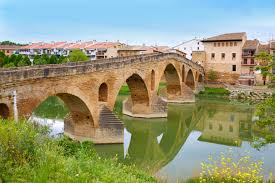
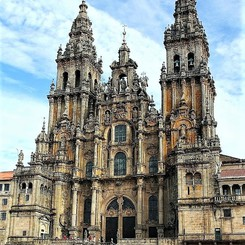

De Camino Francés in zijn huidige loop is in de eerste helft van de 11e eeuw ontstaan; er wordt echter aangenomen dat de route al veel ouder is. Al voor Christus was Finisterre het eindpunt van een heidense tocht. Het klif, 90 kilometer westelijk van Santiago, is door de Romeinen Finisterrae gedoopt, wat 'einde van de wereld' betekent.
De traditie van de bedevaart naar St.Jacob in Compostella gaat terug naar de tijd van Karel de Grote, nadat volgens de legende in 814 zijn graf in Compostella gevonden was. Santiago de Compostella kon in de elfde eeuw niet alleen zo'n belangrijke bedevaartsplaats worden vanwege de wonderbaarlijke verhalen over de apostel Jakobus, maar ook omdat de Abdij van Cluny in de elfde eeuw de godsvredebeweging ging stimuleren die erop gericht was in West-Europa een grotere veiligheid te bewerkstelligen. Deze eerste kerkelijke vredesbeweging stimuleerde niet alleen giften aan kerken en kloosters, maar ook de bedevaarten naar Santiago en daarmee de opkomst van de Romaanse kunst langs de pelgrimswegen.
Tot in Spanje is daardoor de invloed van de architectuur van Cluny merkbaar. De betekenis van Cluny en de pelgrimages naar Santiago voor de reconquista tegen het islamitische Marokkaanse rijk in Zuid-Spanje is overigens beperkt. Verhalen over de heilige Jakobus en de strijd tegen de Moren dateren op zijn vroegst uit het einde van de elfde eeuw, toen de grote trek al op gang gekomen was. De enkele afbeeldingen van Matamoros (de Morendoder), zoals te zien zijn in de kathedraal van Burgos dateren zelfs pas uit de 16e en 17e eeuw.
De pelgrimshandleiding in het vijfde boek van de Codex Calixtinus uit de 12e eeuw noemt voor Frankrijk vier verschillende pelgrimsroutes. Deze beginnen respectievelijk in Tours, Vézelay, Le Puy en Saint-Gilles-du-Gard, bij Arles. De eerste drie komen samen in Saint-Jean-Pied-de-Port in de Franse Pyreneeën, de route vanuit Arles komt via de Somportpas Spanje binnen, loopt via Jaca en komt bij Puente la Reina bij de andere routes vanuit Frankrijk.
Sinds 1993 is het Spaanse deel van de pelgrimsroute in de werelderfgoedlijst van UNESCO opgenomen. De Franse routes maken sinds 1998 deel uit van deze lijst.